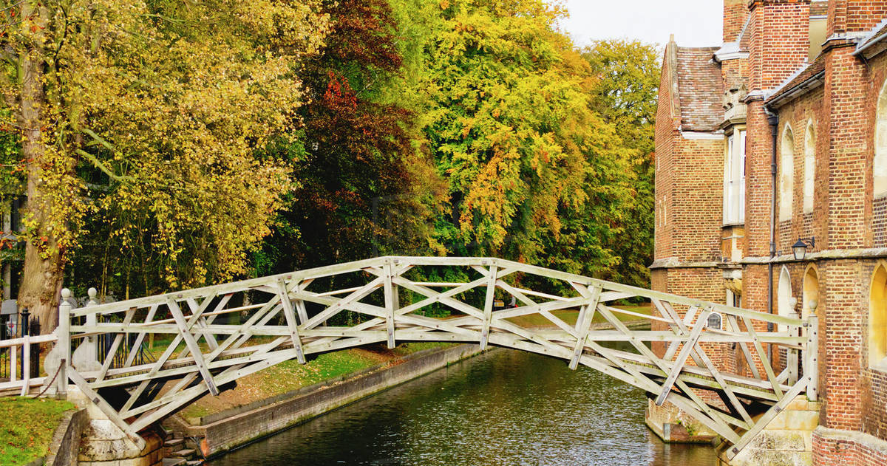

Queens' Mathematics Society
Fostering a mathematical community at Queens' College and the wider
university.
Welcome
QMS, founded in 2014, is a society designed to foster an engaging
and interesting mathematical community at Queens' and throughout
Cambridge. All students are welcome, both those studying mathematics
and otherwise, and we encourage those from other colleges to also
join.

Are you a fresher?
Not sure what's going on? We have the perfect thing for you! Click
below for our unofficial freshers guide to help understand how maths
at Queens' works, and get some useful tips.
What we do

Mathematics Talks
Listen to professors, students and industry professionals
describe their research, interests or work in an engaging
and accessible format.

Social Gatherings
Meet other mathematics enthusiasts, discuss topics you are
interested in and get some free food!

Special Events
Including garden parties, formals and the mahal, a chance to
meet other mathematicians and academics with many
mathematical discussions taking place.